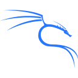
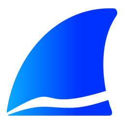

Léo Dupuy
>_ Étudiant B2 Cybersécurité
LILLE, FR
19 ANS
PERMIS B
ANGLAIS B1
ESPAGNOL B1
Étudiant en 2e année de Bachelor Cybersécurité à Lille Ynov Campus, je recherche un stage à partir de juin 2027 avec poursuite en alternance pour mon Bachelor 3 (2027-2028).
Rigoureux et méthodique, passionné par l'investigation numérique et la sécurité des systèmes, je souhaite mettre mes compétences au service de vos équipes et progresser à vos côtés.
>_ COMPÉTENCES
Autopsy · Forensic
Challenge 48H
Wireshark
Analyse réseau · CTFHack The Box
Academy · CJCA en coursHygiène numérique
SecNumAcadémie · CyberSensCloudflare Tunnel & DNS
Homelab · Accès sécuriséTailscale
VPN · Homelab>_ PROJETS & LABS
INFRASTRUCTURE & LABHORS LIGNE
VPS Personnel
Déploiement et sécurisation de services conteneurisés via Coolify & Docker (portfolio, base de données) sur serveur VPS Linux.
VPS LINUX (OVH)
DOCKER & COOLIFY
FAIL2BAN
HARDENING
BASE DE DONNÉES
LAB VIRTUEL & INFRAEN SERVICE
Homelab
Auto-hébergement sous Proxmox VE remplaçant le VPS : 6 conteneurs LXC, Cloudflare Tunnel sans port ouvert, pare-feu par conteneur et déploiement automatique à chaque push.
PROXMOX VE
LXC
CLOUDFLARE TUNNEL
PARE-FEU
TAILSCALE
CI/CD
JELLYFIN
>_ VPS PERSONNEL
← RETOUR AUX PROJETSMon premier hébergement : un VPS Linux chez OVH pour mettre en ligne mes projets de cours sous mon propre domaine. Aujourd'hui hors ligne, remplacé par le Homelab.
Objectif
Commencer simplement : un serveur, un domaine chez OVH, et un déploiement sans gérer chaque service à la main.
Hébergé
- Le portfolio et une base MySQL
- Groupie Tracker et DailyHub
Coolify & Docker
Un conteneur Docker par projet. Coolify gère les conteneurs, les déploiements depuis GitHub et l'exposition des sites.
Fail2ban & durcissement
Un VPS est exposé à Internet : Fail2ban bannit les IP qui échouent trop souvent à se connecter, et le serveur est durci.
Passage au Homelab
Le VPS m'a appris les bases. Le Homelab va plus loin (virtualisation, pare-feu, VPN) et le tunnel supprime l'exposition directe.
>_ HOMELAB
← RETOUR AUX PROJETSServeur Proxmox VE auto-hébergé qui a remplacé mon VPS : 6 conteneurs LXC publiés par un Cloudflare Tunnel,
sans aucun port ouvert sur ma box, et déployés automatiquement à chaque git push.
Services hébergés
| CT | Service | Domaine |
|---|---|---|
| 100 | Jellyfin | jellyflix.leodupuy.fr |
| 101 | Portfolio (nginx) | leodupuy.fr |
| 102 | AEGIS (Node.js) | aegis.leodupuy.fr |
| 103 | Groupie Tracker (Go) | groupie-tracker.leodupuy.fr |
| 104 | Power4 (Go) | power4.leodupuy.fr |
| 105 | DailyHub (nginx, Vite) | dailyhub.leodupuy.fr |
Plan d'adressage
Pas d'accès à la Livebox, donc pas de réservation DHCP : sa plage va de .10 à .150, et tout le Homelab vit en .200 et plus, défini côté Proxmox.
192.168.1.1Livebox ·.200hôte Proxmox.201→.206: les 6 conteneurs
Cloudflare Tunnel
Le DNS du domaine est géré par Cloudflare (proxy, certificats, SSL Full strict). Chaque site a une route du tunnel vers l'IP:port de son conteneur : créer la route remplace l'enregistrement DNS par un CNAME vers le tunnel. Retour arrière : supprimer la route.
Pare-feu Proxmox à trois niveaux
| Niveau | Entrée | Règles |
|---|---|---|
| Global | DROP | Tout est refusé par défaut, sortie autorisée |
| Hôte | DROP | SSH et interface web depuis le LAN uniquement, trafic Tailscale, ICMP |
| Chaque conteneur | DROP | Seul le port du site, depuis le LAN uniquement (donc cloudflared) |
Déploiement par « pull » à chaque git push
Le conteneur tire depuis GitHub plutôt qu'un runner GitHub Actions qui pousse vers mon réseau : dépôts publics, donc ni jeton, ni port ouvert vers GitHub, ni runner à maintenir.
1
Timer systemd
Toutes les 15 s,
Toutes les 15 s,
deploy.timer lance le script.2
Détection
Compare
Compare
origin/main au dernier commit déployé.3
Build
Si nouveauté :
Si nouveauté :
git reset --hard, puis build du site.4
Redémarrage
sudo limité à systemctl restart du service.Séparation des droits
Un utilisateur runner possède le code et déploie. L'application tourne sous un autre utilisateur, sans pouvoir modifier son propre code.
Mesures en place
- Aucun port ouvert sur la box : accès externe uniquement par tunnel sortant
- Pare-feu à trois niveaux, entrée refusée par défaut
- Administration limitée au réseau local et à Tailscale
- Conteneurs non privilégiés, un par service
- HTTPS de bout en bout (SSL Full strict)
- Clés d'API hors des dépôts, fichiers de secrets en lecture restreinte
| Problème | Cause | Solution |
|---|---|---|
| Impossible de réserver des IP sur la Livebox | Pas d'accès à son mot de passe | IP statiques hors de la plage DHCP, définies côté Proxmox |
| DNS géré chez OVH : le tunnel ne pouvait pas fonctionner | Un Cloudflare Tunnel exige que le DNS du domaine soit géré par Cloudflare | Domaine gardé chez OVH, DNS délégué à Cloudflare (serveurs de noms) |
Route de la racine leodupuy.fr refusée | L'ancien enregistrement DNS vers le VPS existait toujours | Suppression de l'ancien enregistrement, puis création de la route |
| Pare-feu du CT100 cru actif | Règle non activée, firewall=1 absent de l'interface | Activation, puis vérification par scan de port |
>_ PARTICIPATIONS

CTF COMCYBER
CTF Root-Me x AAE
CTF Root-Me PRO conçu avec l'Armée de l'Air et de l'Espace, en deux opérations : Aegis (compromission d'un drone) et Icare (paquet piégé pour satellite).
FORENSIC
WIRESHARK
REVERSE
YARA

CTF FORENSIC
Challenge 48H
Challenge intensif de 48H orienté sur l'investigation numérique (Forensic), l'analyse de données et la réponse aux incidents réseau.
FORENSIC
RÉSEAU
DATA
TEAMWORK

EXERCICE MILITAIRE
34e / 2000
CTF Orion
Exercice militaire de cybersécurité sur 4 jours. Mission : Déjouer une campagne de désinformation, identifier les preneurs d'otage et localiser un pilote capturé.
OSINT
COMCYBER
ANSSI
ANALYSE

COMPÉTITION CTF
2ÈME PLACE (LILLE)
CTF Inter-Campus
Compétition de cybersécurité réunissant les étudiants des différents campus Ynov. Épreuves de Web Exploitation, Cryptographie et OSINT.
CYBERSÉCURITÉ
TEAMWORK
CHALLENGE
>_ CERTIFICATIONS
HTB CJCA
EN COURSCertification pratique offensive et défensive : tests d'intrusion sur un réseau d'entreprise, analyse et validation d'alertes SIEM, rédaction d'un rapport professionnel.
SecNumAcadémie
VALIDÉCertification officielle de l'ANSSI couvrant les fondamentaux de la cybersécurité : authenticité, confidentialité, intégrité et traçabilité.
VOIR LE CERTIFICAT →>_ PARCOURS
LILLE YNOV CAMPUS
Bachelor Cybersécurité
Spécialisation sécurité systèmes et réseaux, administration système et fondamentaux de la cybersécurité.
LYCÉE DU HAINAUT • VALENCIENNES
Baccalauréat STI2D
Option Systèmes d'Information et Numérique (SIN). Mention Bien.
IBM FRANCE • LILLE
Stage Cybersécurité
Immersion au sein d'un Security Operations Center (SOC) et découverte des métiers de la cybersécurité :
- Observation du fonctionnement d'un SOC et de ses outils d'analyse et de détection.
- Acquisition de connaissances sur divers métiers et processus liés à la cybersécurité opérationnelle.
- Participation à des projets d'analyse des menaces et amélioration de la compréhension des enjeux actuels.
MICRO LOGIS • PECQUENCOURT
Stage Réparateur Informatique
Maintenance matérielle, assistance technique et gestion autonome de l'atelier :
- Réparation d'ordinateurs, diagnostic matériel et installation/remplacement de disques durs.
- Assistance technique et support sur divers systèmes d'exploitation (Windows, Linux).
- Gestion autonome de l'atelier technique et préparation des postes informatiques.
LA CROIX OU PILE
Saisonnier en Restauration
Travail d'équipe soutenu, rigueur et service en restauration :
- Plonge, nettoyage complet de la cuisine et préparation des commandes.
- Mise en place de la terrasse, service et rangement en équipe.
SERVICE AU PARTICULIER
Entretien de Terrains & Espaces Verts
Prestations d'entretien extérieur réalisées en autonomie complète :
- Entretien de parcelles et extérieurs : tonte, désherbage et travaux d’aménagement.
- Organisation autonome du matériel et relation directe de confiance avec les particuliers.